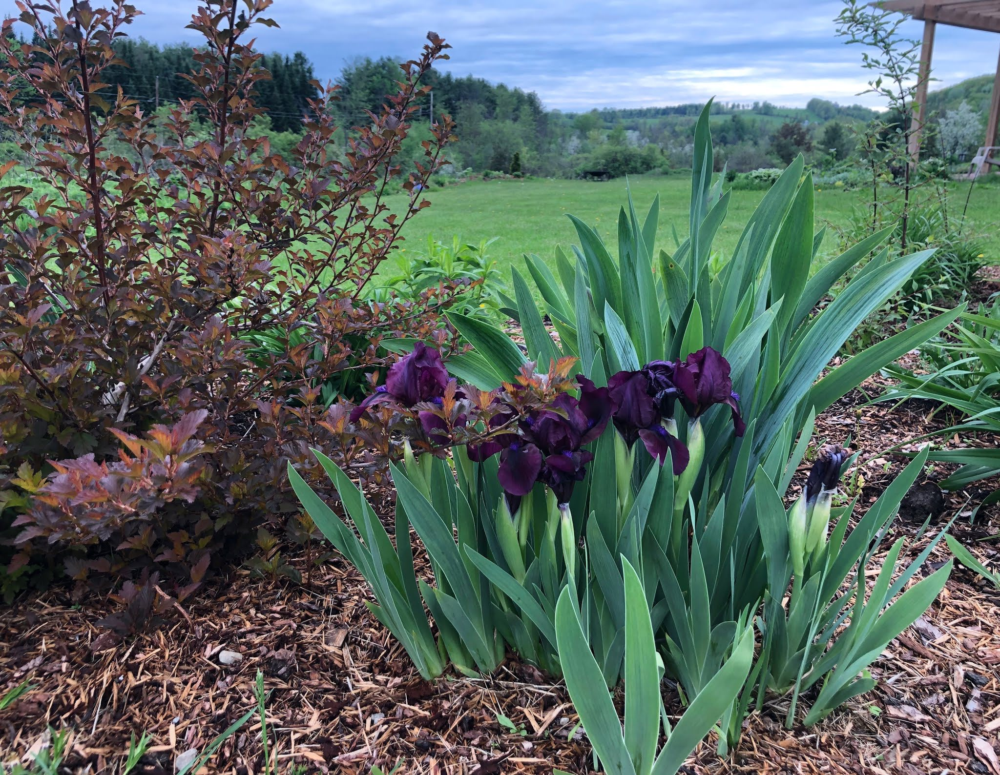
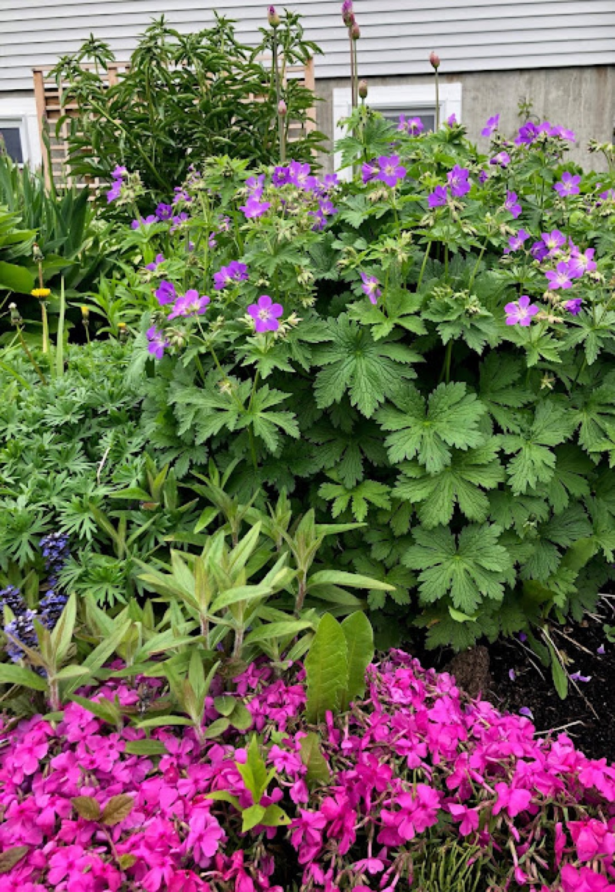
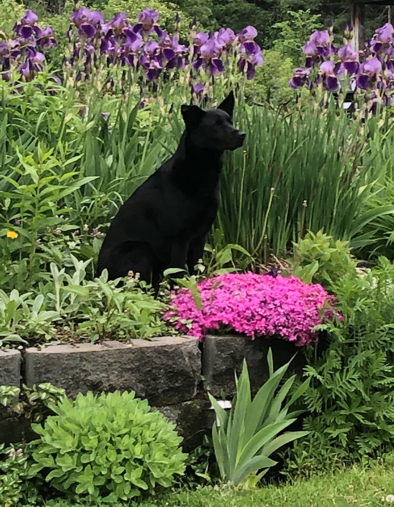
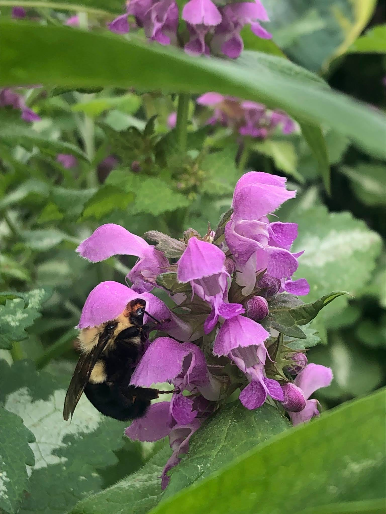

Spring 2019
Spring in the garden
Each Spring I fear the garden won’t emerge, that a long and cold winter will have resulted in the death of many beloved plants. To my delight (and that of a few bumblebees) early iris blooms did provide hope. A spattering of pale yellow narcissus and a few blue forget-me-nots brought more life to the garden beds. Eventually creeping phlox, dianthus, and geranium flowered coloring the garden with bright magenta, purple, and a deep red. We also enjoyed an impressive (although overgrown) purple iris display. I’m still working to divide and plant individual rhizomes. Early dead nettle blooms enticed our few bubble bees even in cooler temperatures.

Allium stands tall behind geranium and creeping phlox. Fragrant white peony gets ready to bloom.



Filed in the garden journal · Spring 2019